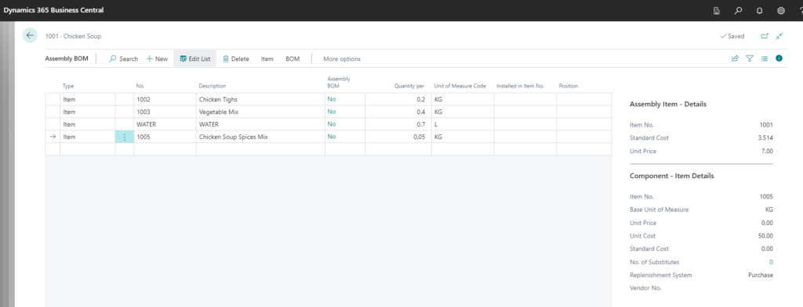
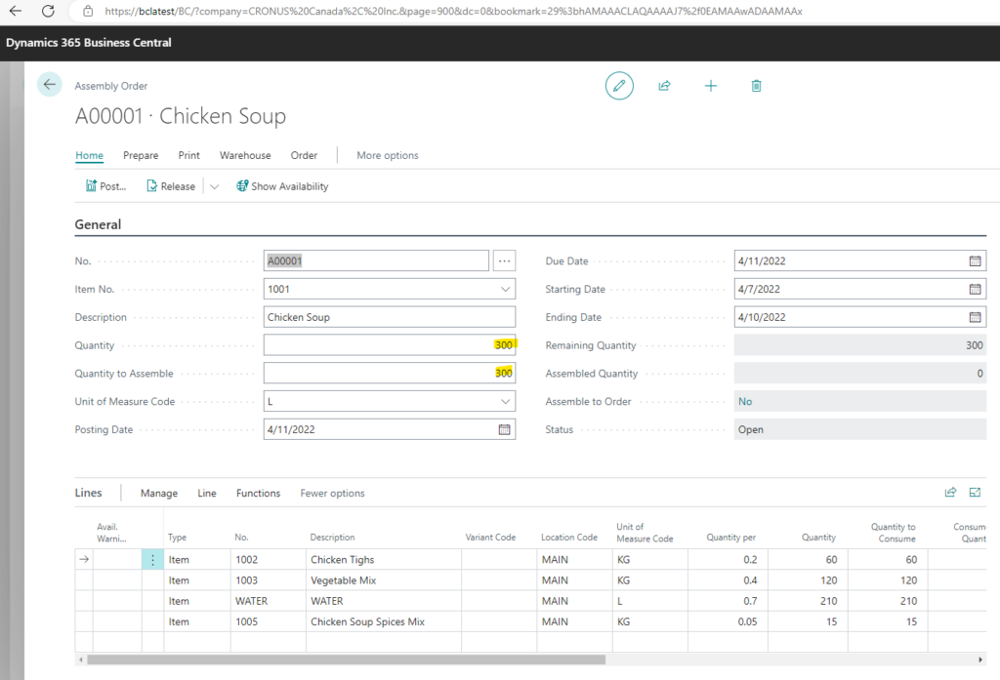
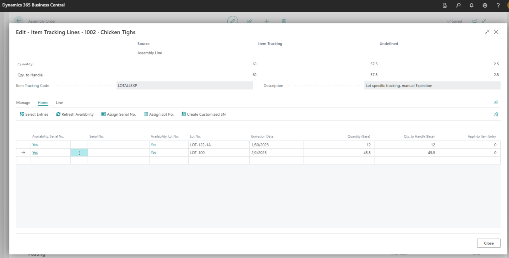
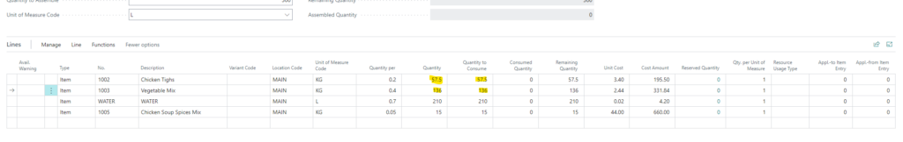
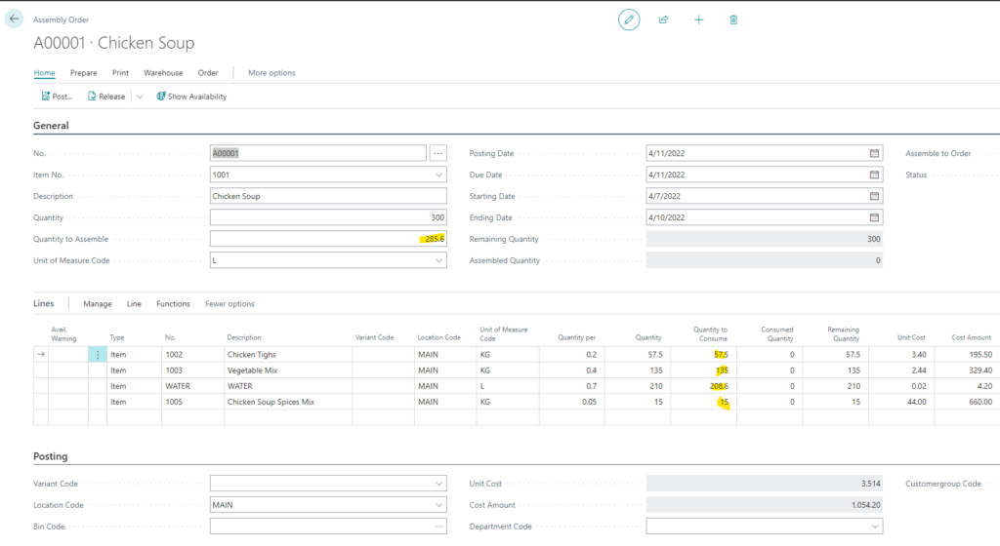
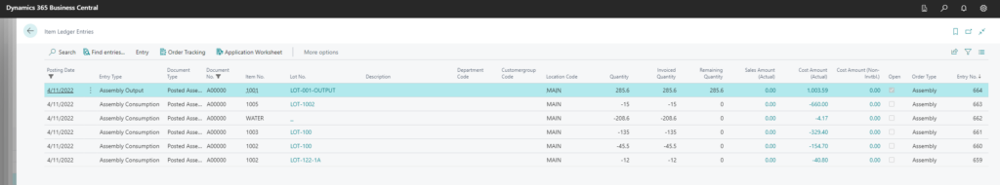

P.S this image is generated by https://deepai.org/
Making chicken soup is easy – you just need chicken, vegetables, spices and water. Mix it all up, boil it and its done.
But how to make chicken soup using Business Central Assembly Order?
First it sounds easy, we can define the assembly BOM, create Assembly order and its done. But in reality when we plan to make 100 litres of soup in the end we only might get 96.5 liter. We plan to use 30 kg of vegetables and 20kg of chicken but we only use 25.8 kg of vegetables and 22 kg of chicken.
Is Business Central Assembly Orders flexible enough to support these variable inputs and output? Lets find out.
Chicken Soup Assembly BOM
First we create a BOM for the soup.

But how do we actually make the soup?
First we cut and slice everything and then boil it for lets say 2 hours.
Lets start by creating a Assembly Order for the soup. We plan to make 300 litres of soup.

First problem with actual inputs
First problem now arises. We create order for 300 liters but we don't really know yet how much soup we will get. We also don't really want inputs based on BOM but we want to tell exactly how much of raw materials we used. And we are using Item Tracking so we have choose Lot No's.
In this example item 1002 Chicken Thighs is 60kg for 300 liters of soup based on BOM. But during the manufacturing we want to use the following Lot's and quantities:

Instead of 60 kg we are only going to use 57.5 kg for whatever output we will get in the end.
So lets create a function that will update Assembly Order Line with the quantities we added during Lot No's selection.
[EventSubscriber(ObjectType::Page, Page::"Item Tracking Lines", 'OnBeforeUpdateUndefinedQty', '', false, false)]
local procedure UpdateAssemblyLineQuantities(var IsHandled: Boolean; var TrackingSpecification: Record"Tracking Specification"; var TotalItemTrackingSpecification: Record"Tracking Specification"; var ReturnValue: Boolean)
var
AssemblyLine: Record"Assembly Line";
begin
if TrackingSpecification."Source Type" = Database::"Assembly Line" then begin
if AssemblyLine.Get(AssemblyLine."Document Type"::Order, TrackingSpecification."Source ID", TrackingSpecification."Source Ref. No.") then begin
if AssemblyLine."Quantity to Consume (Base)" <> TotalItemTrackingSpecification."Qty. to Handle (Base)" then begin
AssemblyLine.Validate(Quantity, TotalItemTrackingSpecification."Qty. to Handle (Base)" * AssemblyLine."Qty. per Unit of Measure");
AssemblyLine.Validate("Quantity to Consume", TotalItemTrackingSpecification."Qty. to Handle (Base)" * AssemblyLine."Qty. per Unit of Measure");
AssemblyLine.Modify(true);
ReturnValue := true;
IsHandled := true;
end;
end;
end;
end;This event subscriber will check after we add the Lot No's and update the Assembly Line if the quantities differ from the planned quantities.
Now instead of 60 kg and 120 kg per BOM we have the quantities that we actually consumed for making this soup:

Second problem with actual input
We planned to make 300 liters of soup but actually in the end we only got 285.6 liters of soup. When we change Quantity to Assemble to 285.6 then all the inputs are changed according to the BOM and we don't want that.
So we can add this subsrciber to prevent line updates when we update Quantity To Assemble in the Header:
[EventSubscriber(ObjectType::Codeunit, Codeunit::"Assembly Line Management", 'OnBeforeUpdateExistingLine', '', false, false)]
local procedure SuppressQuantityToConsumeUpdate(UpdateQtyToConsume: Boolean; var IsHandled: Boolean)
begin
if UpdateQtyToConsume then
IsHandled := true;
end;Now we can have output of 285.6 liters and input whatever we set earlier:

Posting
Now when the order is prepared with actual output and inputs we can post it.
After posting the assembly order we can check the related item ledger entries and see that everything is like we wanted. We get the actual output quantity with the correct costs.

In real life making large quantities of Chicken Soup is much more complex and I have no idea if this works or not for real life scenarios. But its a start to make Assembly Orders more flexible then they are out of the box.